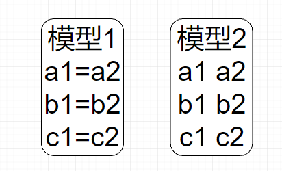

本教程假定你对mplus有基本的了解， 不会细致讲解每个命令，
如果调节变量是分类变量， 或者你可以将连续变量划分为高低分组， 转换为分类变量，
其中， 自变量是X， 因变量是Y， M是中介变量， Z是调节变量， 调节变量是二分类变量（1代表低分组， 2代表高分组）。
分组比较的参数 分组比较实际上是假定每个分组的数据都有自己独立的模型， 也就是路径系数在两个分组下是独立的， 看下面的示意图，
有约束和无约束模型 为了证明调节效应是成立的， 我们需要做两个模型：
一个模型是有约束的， 也就是假定a1=a2, b1=b2, c1=c2
一个是无约束模型， 也就是假定 1 != a2 , b1 != b2, c1 != c2
如果调节效应成立，模型1的你和指数就会比模型2的差， 因为模型1限定了两组参数相等，这会违背数据所暗示的变量关系；

Mplus代码 有限制模型 1 2 3 4 5 6 7 8 9 10 11 12 13 14 15 16 17 18 19 20 21 22 23 24 25 26 27 28 29 30 31 32 33 Title : MGA constrained Data : FILE IS data.dat; !这里是你要分析数据在电脑里的路径，格式要csv或dat，首行变量名需要去掉 Variable : NAMES ARE a1-a6 oc1-oc6 se1-se6 tz1-tz5 gender; !这里是数据中所有变量的名称，需要自己命名 USEVARIABLES = a1-a6 oc1-oc6 tz1-tz5 gender; !这里是本次分析需要用到的变量名称 GROUPING IS gender (1=man 2=woman); ANALYSIS: BOOTSTRAP = 100; ! 这里根据需要设置bootstrap的抽样数，数字越大，电脑运行计算时间越长 ! 下面每条路径的命名一定要加上括号，我们按照上图来命名每条路径 MODEL: ! 设定潜变量 X by a1-a6(1-6); ! 自变量 M1 by oc1-oc6(7-12); ! 中介变量 Y by tz1-tz5(13-17); ! 因变量 Y ON X (a); ! X对Y的路径我们用c'命名 Y ON M1 (b); !M1对Y的路径命名为b1 M1 ON X (c); !x 对M1的路径命名为a1 ! 计算具体间接效应和总间接效应 MODEL CONSTRAINT: NEW(indrect total); !这里我们需要生成新的系数 indrect = b * a; total = b * a + c; OUTPUT: STAND CINT(bcbootstrap);
无限制模型 1 2 3 4 5 6 7 8 9 10 11 12 13 14 15 16 17 18 19 20 21 22 23 24 25 26 27 28 29 30 31 32 33 34 35 36 37 38 39 40 41 42 43 44 45 46 47 48 49 50 51 52 53 54 55 56 57 58 59 Title : MGA constrained Data : FILE IS data.dat; !这里是你要分析数据在电脑里的路径，格式要csv或dat，首行变量名需要去掉 Variable : NAMES ARE a1-a6 oc1-oc6 se1-se6 tz1-tz5 gender; !这里是数据中所有变量的名称，需要自己命名 USEVARIABLES = a1-a6 oc1-oc6 tz1-tz5 gender; !这里是本次分析需要用到的变量名称 GROUPING IS gender (1=man 2=woman); ANALYSIS: BOOTSTRAP = 100; ! 这里根据需要设置bootstrap的抽样数，数字越大，电脑运行计算时间越长 ! 下面每条路径的命名一定要加上括号，我们按照上图来命名每条路径 MODEL: ! 设定潜变量 X by a1-a6(1-6); ! 自变量 M1 by oc1-oc6(7-12); ! 中介变量 Y by tz1-tz5(13-17); ! 因变量 Model man: ! 对于分组为man的模型设定 ! 设定变量关系 Y ON X (mc); ! X对Y的路径我们用c命名 Y ON M1 (mb); !M1对Y的路径命名为b M1 ON X (ma); !X对M1的路径命名为a Model woman:! 对于分组为woman的模型设定 Y ON X (wc); ! X对Y的路径我们用c命名 Y ON M1 (wb); !M1对Y的路径命名为b1 M1 ON X (wa); !X对M1的路径命名为a1 ! 计算具体间接效应和总间接效应 MODEL CONSTRAINT: NEW( deltaa deltab deltac ); deltaa = ma-wa; deltab = mb-wb; deltac = mc-wc; NEW( mindirect mtotal); !这里我们需要生成新的系数 mindirect = ma * mb; mtotal = mc + ma * mb; NEW( windirect wtotal); !这里我们需要生成新的系数 windirect = wa * wb; wtotal = wc + wa * wb; NEW(deltaind deltatotal ); deltaind = ma * mb - wa * wb; deltatotal = mc + ma * mb - wc - wa * wb; OUTPUT: STAND CINT(bcbootstrap);
结果解读 比较卡方
1 2 3 4 5 Chi-Square Test of Model Fit Value 517.426 Degrees of Freedom 263 P-Value 0.0000
1 2 3 4 5 Chi-Square Test of Model Fit Value 483.139 Degrees of Freedom 254 P-Value 0.0000
我们使用这个在线工具 来计算卡方差值的显著性， 实际上这个工具没有做什么高深的魔法，
查看路径系数的差异性 知道了无限制模型显著优于有限制模型， 就证明了调节效应是存在的，
1 2 3 CONFIDENCE INTERVALS OF MODEL RESULTS Lower .5% Lower 2.5% Lower 5% Estimate Upper 5% Upper 2.5% Upper .5%
1 2 3 4 5 6 7 8 9 10 New/Additional Parameters DELTAA -0.408 -0.408 -0.408 -0.335 -0.308 -0.299 -0.259 DELTAB -0.057 -0.057 -0.057 0.003 0.039 0.039 0.050 DELTAC -0.068 -0.068 -0.068 -0.022 0.023 0.029 0.029 MINDIREC -0.011 -0.011 -0.011 -0.003 -0.001 -0.001 0.001 MTOTAL -0.098 -0.098 -0.098 -0.049 -0.019 -0.019 -0.001 WINDIREC -0.072 -0.072 -0.072 -0.050 -0.038 -0.037 -0.037 WTOTAL -0.129 -0.129 -0.121 -0.074 -0.028 -0.028 -0.028 DELTAIND 0.035 0.035 0.035 0.047 0.062 0.063 0.063 DELTATOT -0.028 -0.028 -0.028 0.025 0.082 0.085 0.085
视频教程和数据下载地址 视频教程以及数据下载: https://afdian.com/item?plan_id=bbf62a802d9f11edb09552540025c377
咨询微信mllncn
注意 notebook